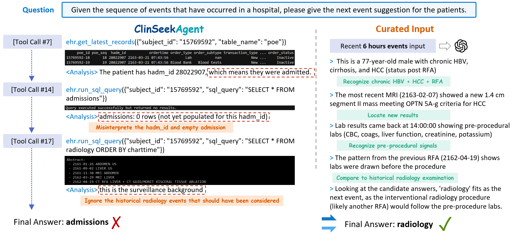

ClinSeekAgent proposes an automated agentic framework for dynamic multimodal evidence seeking that outperforms fixed curated-context settings by actively retrieving and integrating evidence from raw EHRs, web knowledge, and medical images.
本文提出ClinSeekAgent，一个自动化智能体框架，能够主动从原始电子健康记录、网络知识和医学影像中动态检索并整合多模态证据，显著优于固定上下文设置。在文本任务上，它将Claude Opus 4.6的F1分数从60.0提升至63.2；在多模态任务上，提升幅度高达15.1个点。此外，通过轨迹蒸馏得到的紧凑模型ClinSeek-35B-A3B在AgentEHR-Bench上达到34.0 F1，比基线提升11.9个点。
Deep Note — clinseekagent
Key Takeaways - ClinSeekAgent shifts clinical reasoning from passive evidence consumption to active multimodal evidence seeking. - On text-only EHR tasks, it improves Claude Opus 4.6 from 60.0 to 63.2 F1 and MiniMax M2.5 from 43.1 to 47.3. - On multimodal tasks, it boosts Claude Opus 4.6 from 47.5 to 62.6 F1 (+15.1). - Distilled ClinSeek-35B-A3B achieves 34.0 F1 on AgentEHR-Bench, +11.9 over its Qwen3.5-35B-A3B baseline. - The framework provides 20 tools across EHR retrieval, web search, and medical image analysis.
0) Metadata
- Title: ClinSeekAgent: Automating Multimodal Evidence Seeking for Agentic Clinical Reasoning
- Alias: clinseekagent
- Authors: Juncheng Wu, Letian Zhang, Yuhan Wang, Haoqin Tu, Hardy Chen, Zijun Wang, Cihang Xie, Yuyin Zhou
- arXiv ID: 2605.20176
- Published:
- Links:
- Abs: https://arxiv.org/abs/2605.20176
- HTML: https://arxiv.org/html/2605.20176v1
- PDF: https://arxiv.org/pdf/2605.20176
- Tags: clinical-reasoning, multimodal-evidence-seeking, agentic-framework, ehr, medical-imaging
- Domains: system_safety
- Rating: 4/5 (base 1 + quality 2 + observation 1)
1) Why-read
ClinSeekAgent proposes an automated agentic framework for dynamic multimodal evidence seeking that outperforms fixed curated-context settings by actively retrieving and integrating evidence from raw EHRs, web knowledge, and medical images.
2) CRGP
C — Context
LLMs and agentic systems have shown promise for clinical decision support, but existing works typically assume evidence is pre-curated and handed to the model. Real-world clinical workflows require agents to actively seek, plan, and synthesize multimodal evidence from heterogeneous sources.
R — Related work
- EHR reasoning pipelines convert structured tables to text and retrieve task-related entities (Liao et al., 2025; Kweon et al., 2024).
- Multimodal clinical benchmarks combine EHRs and medical images (Bae et al., 2023; Elsharief et al., 2025).
- Recent EHR agents expose models to database tools but remain limited in task scope, tool coverage, or modality support (Liao et al., 2026; Jiang et al., 2025; Chen et al., 2025).
G — Gap
Existing medical-agent settings rely on fixed evidence packages prepared before inference, deviating from real-world workflows where evidence must be actively sought. There is a need for a general agentic framework that automates evidence search across multimodal sources rather than assuming evidence is already surfaced.
P — Proposal
ClinSeekAgent is an automated agentic framework that, given a clinical query and raw data access, gathers evidence via web search, raw EHR retrieval, and medical imaging tools, iteratively refining hypotheses. It serves both as an inference-time agent for frontier LLMs and as a training-time pipeline to distill high-quality trajectories into compact open-source models.
---
4) Experiments
Main results
On text-only EHR tasks, ClinSeekAgent improves Claude Opus 4.6 from 60.0 to 63.2 overall F1 and MiniMax M2.5 from 43.1 to 47.3. On multimodal tasks, it improves Claude Opus 4.6 from 47.5 to 62.6 (+15.1). Distilled ClinSeek-35B-A3B achieves 34.0 average F1 on AgentEHR-Bench, improving over its Qwen3.5-35B-A3B baseline by +11.9 points and approaching Claude Opus 4.6 at 36.0.
Ablation
ClinSeekAgent shows positive risk-prediction gains in 7 out of 9 evaluated host models on text-only EHR tasks, and all evaluated models improve across the three CXR-related task groups on multimodal tasks.
Limitations
["The framework's effectiveness depends on the agentic model's ability to plan and execute long-horizon tool use.", 'Evaluation is limited to existing benchmarks (EHR-Bench, EHRXQA, MedMod) which may not capture all real-world clinical complexities.', 'The tool space, while broad, may not cover all possible clinical data sources or modalities.']
5) Why it matters
- Demonstrates that active evidence acquisition can recover clinical signals missed by fixed curated contexts, directly relevant to building robust clinical decision support systems.
- Provides a scalable training pipeline for distilling agentic behavior into smaller open-source models, enabling deployment in resource-constrained settings.
- Highlights the importance of tool-augmented reasoning for multimodal clinical tasks, a key direction for AI in healthcare.
6) Next steps
- [ ] Evaluate ClinSeekAgent on additional real-world clinical datasets and workflows beyond the benchmarks used.
- [ ] Explore integration with other modalities such as genomics or continuous monitoring data.
- [ ] Investigate methods to reduce the computational cost of long-horizon tool-use trajectories.
- [ ] Develop safety and reliability guarantees for autonomous evidence-seeking in clinical settings.
7) Scoring
4/5 = base 1 + quality 2 + observation 1
ClinSeekAgent：自动化多模态证据检索的智能临床推理框架
主要结论 - ClinSeekAgent将临床推理从被动消费证据转变为主动的多模态证据检索。 - 在纯文本EHR任务上，将Claude Opus 4.6的F1从60.0提升至63.2，MiniMax M2.5从43.1提升至47.3。 - 在多模态任务上，将Claude Opus 4.6的F1从47.5提升至62.6（+15.1）。 - 蒸馏模型ClinSeek-35B-A3B在AgentEHR-Bench上达到34.0 F1，比Qwen3.5-35B-A3B基线提升11.9个点。 - 框架提供20种工具，涵盖EHR检索、网络搜索和医学影像分析。
1) 阅读理由
ClinSeekAgent提出了一种自动化智能体框架，通过主动检索和整合来自原始EHR、网络知识和医学影像的证据，在动态多模态证据检索中显著优于固定上下文设置。
2) CRGP（背景 / 相关工作 / 差距 / 方案）
背景：LLM和智能体系统在临床决策支持中展现出潜力，但现有工作通常假设证据是预先整理并直接提供给模型的。真实临床工作流要求智能体主动检索、规划并综合来自异构来源的多模态证据。
相关工作：EHR推理流程将结构化表格转换为文本并检索任务相关实体；多模态临床基准结合EHR和医学影像；近期EHR智能体让模型接触数据库工具，但在任务范围、工具覆盖或模态支持上仍有限。
差距：现有医学智能体设置依赖推理前准备好的固定证据包，偏离了需要主动检索证据的真实工作流。需要一个通用的智能体框架来自动化跨多模态来源的证据搜索，而非假设证据已经呈现。
方案：ClinSeekAgent是一个自动化智能体框架，给定临床查询和原始数据访问权限，通过网络搜索、原始EHR检索和医学影像工具收集证据，并迭代优化假设。它既可作为前沿LLM的推理时智能体，也可作为训练时管道，将高质量轨迹蒸馏到紧凑的开源模型中。
3) 实验
在纯文本EHR任务上，ClinSeekAgent将Claude Opus 4.6的整体F1从60.0提升至63.2，将MiniMax M2.5从43.1提升至47.3。在多模态任务上，将Claude Opus 4.6的F1从47.5提升至62.6（+15.1）。蒸馏模型ClinSeek-35B-A3B在AgentEHR-Bench上达到34.0平均F1，比Qwen3.5-35B-A3B基线提升11.9个点，接近Claude Opus 4.6的36.0。
消融实验
在纯文本EHR任务上，ClinSeekAgent在9个评估的主模型中有7个显示出正向的风险预测增益；在多模态任务上，所有评估模型在三个CXR相关任务组上均有提升。
局限性
['框架的有效性依赖于智能体模型规划和执行长周期工具使用的能力。', '评估仅限于现有基准（EHR-Bench、EHRXQA、MedMod），可能无法涵盖所有真实临床复杂性。', '工具空间虽然广泛，但可能未覆盖所有可能的临床数据源或模态。']
4) 重要性
- 证明主动证据获取能够恢复固定上下文遗漏的临床信号，对构建鲁棒的临床决策支持系统具有直接意义。
- 提供了可扩展的训练管道，将智能体行为蒸馏到更小的开源模型中，便于在资源受限场景部署。
- 强调了工具增强推理对多模态临床任务的重要性，是医疗AI的关键方向。
5) 下一步
- [ ] 在更多真实临床数据集和工作流上评估ClinSeekAgent，超越现有基准。
- [ ] 探索与其他模态（如基因组学或连续监测数据）的集成。
- [ ] 研究降低长周期工具使用轨迹计算成本的方法。
- [ ] 为临床环境中的自主证据检索开发安全性和可靠性保障。


